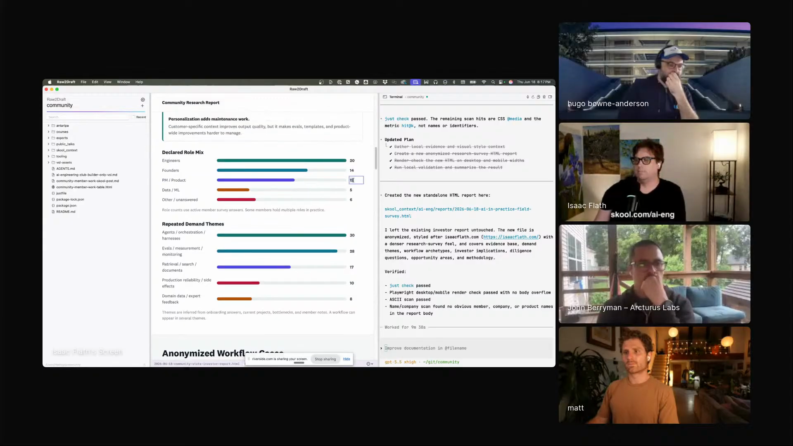
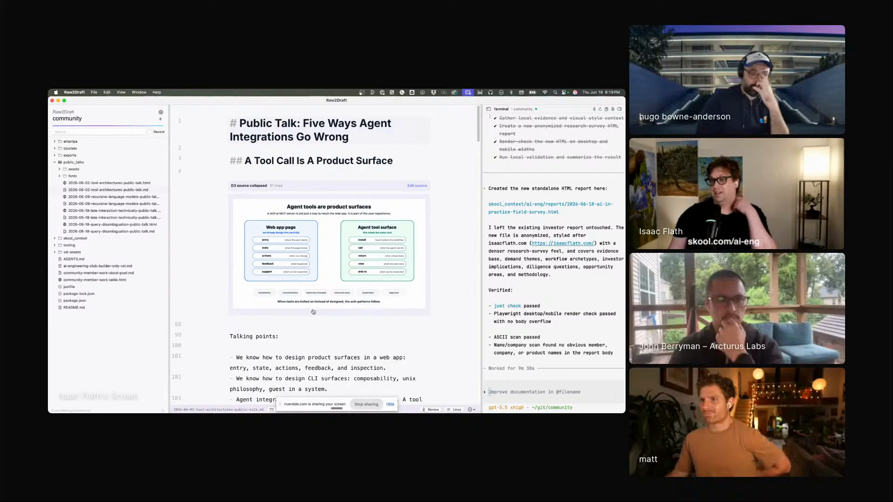
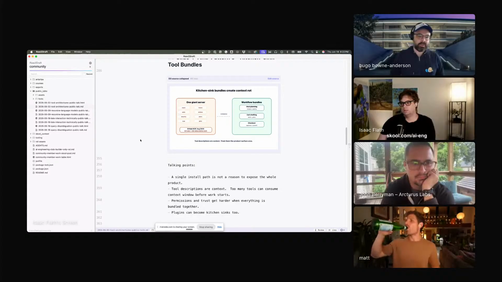
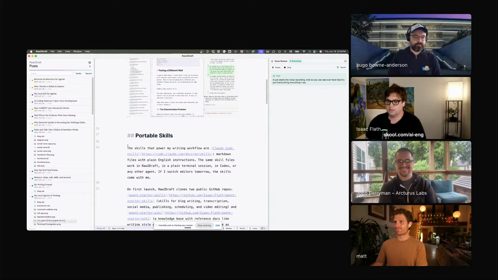

human-editable-ai-artifacts
Ask agents for rich output, but keep the source and the manual editing surface close enough for the human final pass.
Isaac's demo is the 90/10 handoff: let AI get a report, slide, diagram, or draft most of the way there, then keep the last ten percent human. He built Raw2Draft so Codex can do the first pass and leave him something he can still touch. He can double-click a sentence, fix a label, point at a bad paragraph, and finish it himself.

"I can have it create HTML, I can have it create this nice interface, but I can also manually edit it."
Raw2Draft is Isaac's local writing and communication app. It knows the active file, runs Codex with project skills, renders rich outputs, and keeps the source nearby. It is a text editor, a preview surface, and an agent workbench in one place.
A generated HTML report can be polished without asking the agent to regenerate everything. A markdown presentation can hold talking points, code, links, and diagrams while still building into a shareable page. The model helps make the object; Isaac keeps the human handles.

"It's ninety percent of the way there. Let me do the last ten percent manually."


"It's like a point and talk interface."


"I don't need my tutorial to sound like poetry."
Ask agents for rich output, but keep the source and the manual editing surface close enough for the human final pass.
Zinsser-first plain writing, deletion, critique, and clean starts before the human adds taste.
Turns markdown with slides, diagrams, links, and talking points into a presentation artifact that can be shared.
AssemblyAI word-level timestamps support voice review and precise cuts to filler words in video or prose workflows.
Screenshots and diagrams go to Gemini for feedback on overlaps, clutter, and visual problems before Isaac reviews them.
Isaac's rule for public skills is blunt: if you are going to use a prompt or skill, read it first.